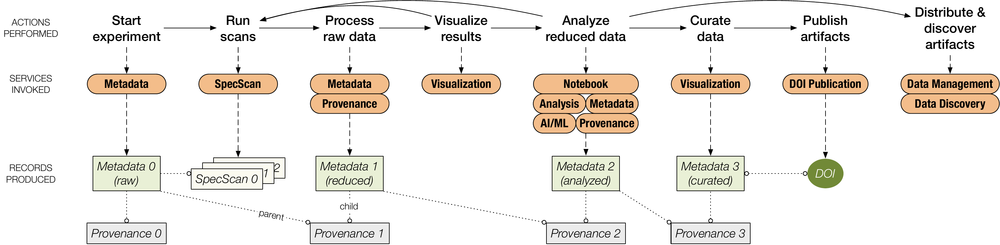
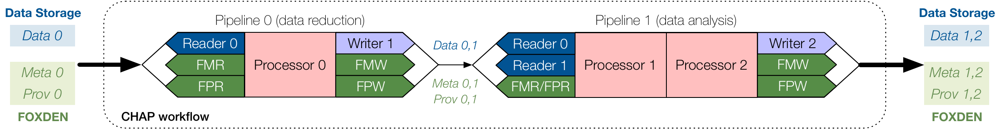

FOXDEN
The FAIR Open-Science eXtensible Data Exchange Network FOXDEN is a suite of lightweight, modular data services, developed at the Cornell High Energy Synchrotron Source (CHESS), that allows researchers to easily record metadata, provenance, and other research artifacts in real time to accompany their raw, reduced, and analysed datasets to adhere to FAIR (Findable, Accessible, Interoperable, and Reusable) data principles. It also allows researchers to publish this with Digital Object Identifiers (DOIs) to create artifical intelligence (AI) ready datasets. Although FOXDEN originated at CHESS, it is designed to be deployed by any user facility or research group. However, the discussion here focusses on its use within and in connection with CHAP on the CHESS Linux system.
FOXDEN services are web applications written in Go, built on backend database repositories, with APIs for command line interaction. Each service performs a different function in the data ecosystem: metadata management, provenance tracking, publication, etc. The following figure shows a typical CHESS research workflow:

A typical CHESS research workflow. FOXDEN services are invoked at each step to produce a chain of Metadata, Provenance, and SpecScan records that can be published under a single DOI. Dotted lines connect records in a chain, and an open circle on one end of a dotted line denotes a reference to the record at the other end.
As illustrated in the Introduction this workflow can be translated into a CHAP workflow as a series of Pipeline components that can be executed individually or all at once (sequentially or in parallel).
CHAP Processors typically need metadata, which can be provided by user generated input files and read by suitable CHAP Readers. Alternatively, CHAP can retrieve metadata directly using the FOXDEN Metadata service, eliminating the user from having to manually provide metadata with the associated risk of errors or incomplete information.
To streamline this process, CHAP provides a FoxdenMetadataReader and FoxdenProvenanceReader (derived classes of Reader) that call FOXDEN’s HTTP APIs to retrieve the relevant records from within a Pipeline.
Similarly, a FoxdenMetadataWriter and FoxdenProvenanceWriter (derived classes of Writer) inject FOXDEN records for the new datasets produced by CHAP Processors.
The following figure illustrates how at every step in the CHAP workflow, FOXDEN services can be invoked (by either a researcher or an automated software process) to create Metadata records for datasets and Provenance records for parent/child relationships between datasets.

A schematic CHAP workflow composed of two Pipeline components that perform successive stages of data reduction and analysis. FMR and FPR denote the respective FoxdenMetadataReader and FoxdenProvenanceReader subclasses, and FMW and FPW denote FoxdenMetadataWriter and FoxdenProvenanceWriter, respectively.
Using FOXDEN in a CHAP workflow is therefore as easy as adding a FoxdenMetadataReader and FoxdenProvenanceReader to the CHAP YAML comfiguration file as inputs to the first CHAP Processor and supplying each with a configuration specifying the appropriate FOXDEN service URLs as well as the (raw) data DID (the globally unique Dataset IDentifier in FOXDEN) or a suitable FOXDEN Data Discovery query to the (raw) data.
CHAP Processors can then access any data available in the Metadata record by utilizing its schema.
CHAP Processor-specific Metadata gets automatically appended to the PipelineData list and can either be passed on to the next Pipeline component or written with the FoxdenMetadataWriter to the FOXDEN Metadata Service.
The appropriate Provenance records and the correct parent child relations are created automatically by CHAP and can be written with a FoxdenProvenanceWriter to the FOXDEN Provenance Service.
This integration of CHAP with FOXDEN demonstrates the benefits of using machine-readable metadata to streamline the configuration of data pipelines: human error is reduced, and as a result, the pipelines can be easily scaled up and automated.